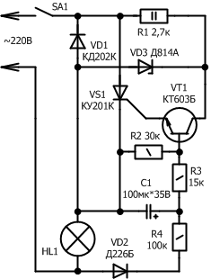
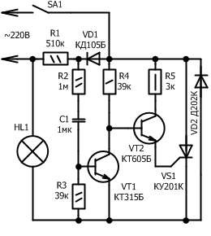
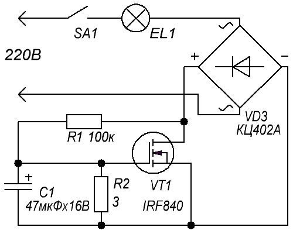
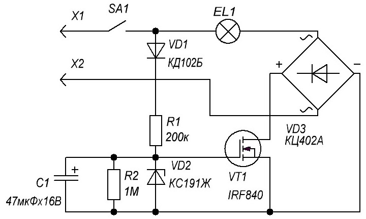

Устройства плавного включения ламп
Сопротивление у холодной лампы накаливания в несколько раз меньше, чем сопротивление при номинальном режиме работы. В связи с этим, в момент включения лампы, номинальный ток значительно возрастает, что в свою очередь приводит к значительному разрушению нити накала. Чтобы увеличить срок службы лампы, достаточно ограничить на короткое время (несколько секунд) после включения, протекающий через нее ток.
За этот небольшой промежуток времени, нить накала разогревается до некой определенной температуры и ее сопротивление возрастает, после чего лампу можно включать на номинальную мощность, при которой через нее будет течь уже номинальный ток.
Схема плавного включения ламп (вариант 1)
Один из вариантов устройства плавного включения ламп показан на рисунке 1. Оно позволяет на 1 секунду после включения выключателя SA1 снизить в 2 раза ток который протекает через лампу, а после включить лампу в нормальный режим.

Рис. 1 - Схема плавного включения ламп (вариант 1)
Снижение тока после включения происходит в следствии пропускания только отрицательного полупериода напряжения сети через диод VD1. А в положительный полупериод, ток через лампу не течет, так как тринистор VS1 закрыт. Конденсатор C1 заряжается через диод VD2 и резистор R4, в этот момент транзистор VT1 закрыт. После того как конденсатор зарядится, ток начинает протекать через резистор R3 и базовую цепь транзистора, что приводит к открыванию тринистора в начале каждого положительного полупериода. С этого момента через лампу начинает протекать номинальный ток.
Стабилитрон VD3 служит для ограничения напряжение на коллекторе транзистора VT1 при закрытом тринисторе VS1. После того как лампа выключается выключателем SA1, конденсатор разряжается через резисторы R3 и R2 и устройство устанавливается в исходное состояние.
В устройстве можно применить транзистор из серии КТ312, КТ315, КТ603 но важно учитывать, что статический коэффициент передачи тока должен быть не менее 30. Стабилитрон VD3 должен стабилизировать напряжение до 6…10 В а максимальный ток стабилизации составлять не менее 30 мА. Диод VD1 и тринистор VS1 можно заменить аналогичными, но максимальное обратное напряжение должны быть не менее 300 В, с прямым током не менее 1 А.
Используя исправные элементы и правильно собрав устройство, оно начинает работать сразу, и не нуждается в наладке. Задержку включения номинального тока можно выбрать несколько иную, за это отвечает емкость конденсатора С1.
Схема плавного включения ламп (вариант 2)
В отличие от ранее описанной, данная схема (рис. 2) собрана на двух транзисторах одинаковой структуры.

Рис. 2 - Схема плавного включения ламп (вариант 2)
После включения выключателя SА1, отрицательные полупериоды сетевого напряжения проходят через диод VD2 и лампу HL1. Конденсатор C1 заряжается через диод VD1 и резистор R2 и базовую цепь транзистора VT1 положительными полупериодами сетевого напряжения. При этом транзистор VT1 открыт, а транзистор VT2 и тринистор VS1 закрыты. Когда конденсатор зарядится, транзистор VT1 закрывается, а транзистор VT2 и тринистор VS1 наоборот открываются. Происходит это в начале каждого положительного полупериода сетевого напряжения, после этого через лампу протекает номинальный ток.
Транзистор VT1 может применить любой из серии КТ315 или КТ312, транзистор VT2 – необходим высоковольтный, с напряжением коллектор-эмиттер не менее 300 В, к примеру КТ605Б, КТ940А. Остальные компоненты выбирают аналогичным образом, как для первого варианта устройства.
Схема плавного включения ламп (вариант 3)
В устройстве, которое реализует режим плавного включения ламп накаливания, удобно использовать мощные полевые переключательные транзисторы (рис. 3). Среди них можно выбрать высоковольтные, с рабочим напряжением на стоке не менее 300 В и сопротивлением канала не более 1 Ом.

Рис. 3 - Схема плавного включения ламп (вариант 3)
Данная схема проще тем, что включается в разрыв одного из проводов. Тут по окончании зарядки конденсатора напряжение на стоке составит примерно 4…4,5 В, а остальное напряжение сети будет падать на лампе. На транзисторе при этом будет выделяться мощность, пропорциональная току, потребляемому лампой накаливания. Поэтому при токе более 0,5 А (мощность лампы 100 Вт и больше) транзистор придется установить на радиатор.
Схема плавного включения ламп (вариант 4)

Рис. 4 - Схема плавного включения ламп (вариант 4)
Эта схема (рис. 4) с оптимальным режимом работы полевого транзистора, что позволяет его использовать без радиатора при мощности лампы до 250 Вт. Схема устройства, которое включается последовательно с лампой накаливания, приведена на рисунке. Полевой транзистор включен в диагональ диодного моста, поэтому на него поступает пульсирующее напряжение. В начальный момент транзистор закрыт и все напряжение падает на нем, поэтому лампа не горит. Через диод VD1 и резистор R1 начинается зарядка конденсатора С1. Напряжение на конденсаторе не превысит 9,1 В, потому что оно ограничено стабилитроном VD2. Когда напряжение на нем достигнет 9,1 В, транзистор начнет плавно открываться, ток будет возрастать, а напряжение на стоке уменьшаться. Это приведет к тому, что лампа начнет плавно зажигаться.
Но следует учесть, что лампа начнет зажигаться не сразу, а через некоторое время после замыкания контактов выключателя, пока напряжение на конденсаторе не достигнет указанного значения. Резистор R2 служит для разрядки конденсатора С1 после выключения лампы. Напряжение на стоке будет незначительным и при токе 1 А не превысит 0,85 В.
При сборке устройства были использованы диоды 1N4007 из отработавших свое энергосберегающих ламп. Стабилитрон может быть любой маломощный с напряжением стабилизации 7...12 В (например, BZX55-C11). Конденсаторы — К50-35 или аналогичные импортные, резисторы — МЛТ, С2-33.
Налаживание устройства сводится к подбору конденсатора для получения требуемого режима зажигания лампы. Для конденсатора на 100 мкФ пауза от момента включения до момента зажигания лампы составляет примерно 2 секунды.
Немаловажным является отсутствие мерцания лампы, как это наблюдалось при реализации других схем.
Источники:
kiloom.ru - Устройство плавного включения ламп
radioskot.ru - СХЕМА ПЛАВНОГО ВКЛЮЧЕНИЯ
esxema.ru - Автомат плавного включения лампы на полевом транзисторе